Row space of a matrix is orthogonal to the null space of the matrix.
Row space of a matrix is orthogonal to the null space of transpose of thematrix.
Dimension of row space of a matrix is always equal to the dimension ofcolumn space of the matrix.
Dimension of row space of a matrix need not be equal to the dimension ofcolumn space of the matrix.
Q3MSQ3 marksselect all that apply
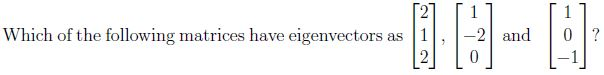
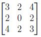
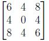
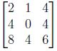
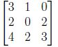
Q4MSQ3 marksselect all that apply
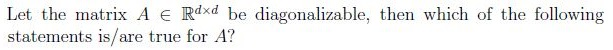
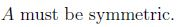
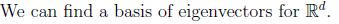
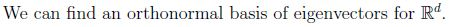
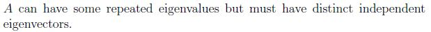
Q5MSQ4 marksselect all that apply
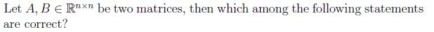
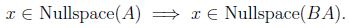
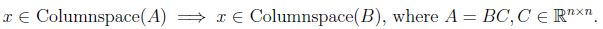
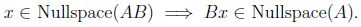
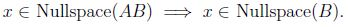
Q6MSQ4 marksselect all that apply
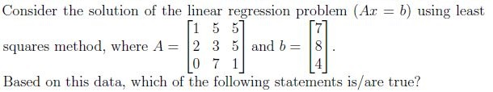
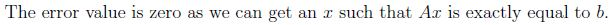
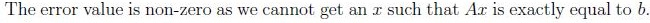
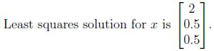
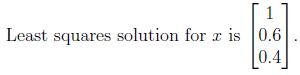
Q7MCQ4 marks
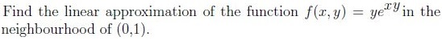
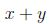
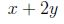
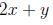
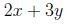
Q8MCQ4 marks
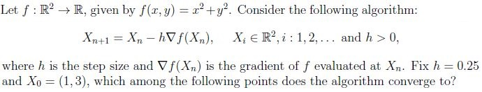
(1, 3)
(1/2, 1/6)
(0, 0)
The algorithm does not converge
Q9SA4 marks
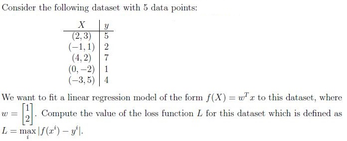
Q10SA4 marks
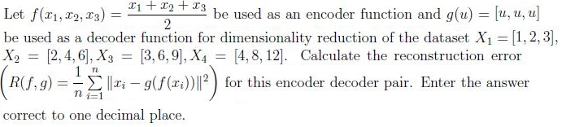
Q11SA4 marks
Let P1 be the projection matrix onto the line spanned by the vector a = [1, 2, 3]T . Let P2 be the projection matrix that projects vectors onto the plane perpendicular to span of a. Find the determinant of P1 + P2.
Q12SA3 marks
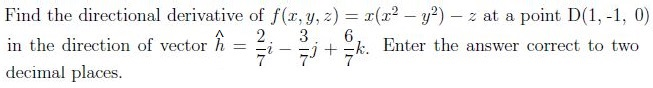
Q13SA2 marks
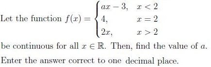
Comprehension passage - the questions below it refer to this
Based on the above data, answer the given subquestions.
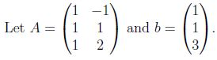
Q14MCQ2 marks
Is the system Ax = b consistent?
Yes
No
Q15SA3 marks
Using the least square approximation, find the length of the projection vector p of b onto the column space of A. Enter the answer correct to two decimal places.